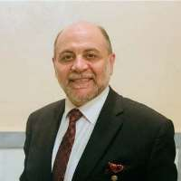

Testimonials
"The greatest medicine of all is to teach people how not to need it." - Hippocrates (460 BC to 375 BC)
Hippocrates of Kos, also known as Hippocrates II, was a Greek physician of the classical period who is considered one of the most outstanding figures in the history of medicine.
-
Suzan Ayscough
She/Her/Elle
CANADA
I am actually kinda’ proud to be one of Aboudi’s original five crash test dummies so to speak, meaning I volunteered to be one of his first five test patients when he was a student of homeopathic medicine, and one of seven graduate students (including his wife Andy) sharing a huge apartment in Montreal, in 1985. We were nicknamed the “UN” by our friends, as it was common to hear French, Arabic and English in single of multiple conversations in the kitchens, halls and living rooms. Aboudi’s core interest, even back then, was to help people feel better. He has literally saved my life once. He enlightened me to a potassium deficiency before I knew what the word meant, let alone the fact it’s an essential mineral to stay alive, and where to find it in food, drink and supplements. It is hard to summarize my respect and admiration for Aboudi as a friend and practitioner who has changed the way I think about life in general, and my own body as living organism, more specifically. I am thrilled to be able to contribute as a volunteer to this website with original photos and videos, and as its Content Editor as a way of giving back, and paying my eternal gratitude forward.
-

Dr Abdul Halim Zeidan
He/Him/Lui
LEBANON
In 2012, I had been diagnosed with renal failure which required either dialysis or kidney replacement. It was considered ‘too late’ to check for alternatives, by no less than three major specialized centers, which all gave the same bleak prognosis—but I was refusing to surrender. Just two days before the first dialysis session, I visited Hp. Merhi. Luckily for me, he checked me out with the MORA equipment, which provided a very hopeful analysis: going deep to the root causes, and dealing with them, could cure and save the kidney. As an old believer and user of alternative medicine, I took this opportunity to heart, especially to avoid dialysis. Hp. Merhi started me on a new path, with a regulated food menu and homeopathic treatment that helped greatly. My ‘renal failure’ was reversed, and my kidneys recovered in a short period (2 months). The real upside to the kidney kerfuffle was that I got into a long-term friendship, with a trustful resource, and caring professional practitioner. A double win. Hp. Merhi is always available when I need him. I get an annual check-up of course, but I do see him many times per year, because also I accompany my referred friends to his office!
-
Abed Ghaled
He/Him/Lui
LEBANON
Hp. Merhi opened an amazing horizon for me. He is sincere. He takes things seriously, and scientifically. He finds which treatments are best for his individual patients. He is always improving his knowledge of the latest discoveries in alternative medicine. Thanks to Hp. Merhi, my life is no longer controlled by a “weight problem”. My name is Abed Ghaleb, and I am a 37-year-old Lebanese entrepreneur with my own management consulting company. My journey started with Hp. Merhi back in 2019, when I weighed 128 kgs. Only 18 months later, I had lost 50+ kilos, and achieved my ideal weight of 79.5 kgs. It will soon be 2023, and I’m still maintaining that ideal weight, by practicing the changes in lifestyle and diet that Hp. Merhi taught me. Here’s what happened. Two days before meeting Hp. Merhi, I was trying to tie my shoes, but I couldn’t reach my shoelaces. That was the “Aha” moment, where I said to myself: “the time for change has come! I am still in my 30s, and I won’t let myself down dramatically, nor go to a place of no return’.” I began searching for a natural solution. I didn’t seek a fast one, because I only wanted to get back to looking like a ‘normal’ person. Time was not the issue, so a friend of mine, familiar with my frustrating situation, introduced me to the concept of homeopathy, and Mr. Merhi. “See what he recommends,” said the friend, so I decided it would be worth a try. (Back then, I also didn’t have any knowledge of how my body works, nor on the roles of glands, vitamins, minerals and more in our overall wellness, but more on that later.) My first visit to Hp. Merhi was amazingly informative. He spent around 2.5 hours with me in total, including my diagnosis, using a bio-resonance machine. He started by explaining to me how my body functions, and how one’s overall energy is related to wellness. He recommended a strict plan for me to follow, including supplements, homeopathic treatment and stressed the importance of abiding by the plan. Up until that day, I was only concerned about losing weight, but I followed the entire plan. After only few weeks into The Plan, I started noticing great changes in my overall energy and wellness, as well as the expected loss of body weight. I started to believe that slow change would work best, especially after 15 years of food abuse, neglect and bad lifestyle habits. Mr. Merhi warned me to not expect results overnight, so I didn’t. My second appointment with Hp. Merhi showed great progress, with healing results, so I continued to abide by The Plan for months, and my body kept improving on all levels. This opened up a whole new world to me. I am curious by nature, so with the additional guidance of Mr. Merhi, I began researching my own health: how organs and glands work, how vitamins and minerals benefit, the best time to eat, the best way to sleep, and health factors. My new belief in this natural healing system helped me lose some 50 kgs, without any damage in any body function. In addition, my body fully healed from toxins. I even got rid of my reading glasses, as I no longer needed them while reading. So, you see my story is not just about weight loss. It’s about living a better life. It’s about learning to read the needs of my own body. It has been about listening to what Mr. Merhi taught me about how to live a healthy life and applying it to my daily routine. I will always consult Hp. Merhi when I need his wisdom guidance to get or keep me well, but today I know how to apply some of his wisdom to become my own healer and doctor, which is also his own personal goal, which is to have his patients be able to care for themselves. A great catch! I genuinely recommend Hp. Merhi to anyone who is searching to become a better version of themselves, no matter what age they are. My own parents have visited Hp. Merhi, and now they too have started their own journey of healthy change. You can too.
-
Ian's Mother
She/Her/Elle
CYPRUS
Our journey with HP Merhi, began back in 2003. I was 24 at the time and battling many illnesses. A long history of misdiagnosis and wrong treatments, I was depleted from health on all levels. Hp. Merhi, accurately diagnosed and pinned the problems that I had and put me on the right road to health. Since following his regimen and his homeopathic treatment I am healthy and was able to conceive a healthy child. If I am to go into details as to how many times Hp. Merhi saved my family from all, I would overtake all testimonies. But to sum it up: Hp. Merhi is superiorly knowledgeable in all aspects of healthy living. His diagnosis is accurate! He is truthful and trustworthy. He is a practitioner with ethics and morals. His Homeopathic holistic treatment approach, combining physical, mental, spiritual and environmental, encompassing all, is exceeding all conventional medicine. We are forever grateful to Hp. Merhi.
-
Afaf Omais
She/Her/Elle
IVORY COAST
Abdul Merhi guided me with precious advice, using Mora Therapy, and showed me how to take care of my health, through a different perspective, without blindly following allopathic traditional medicine. This saved me from many health issues that we all go through… I followed up with routine medical check-ups. I asked Mr. Merhi to advise me on the diagnosis, and asked him to replace ‘chemical medication’ with homeopathic treatments, natural food supplements, and the vitamins my body really needed. This method helped me solve problems like hypothyroidism, menopause weight gain, and many other issues which were cured (instead of them becoming permanent illnesses and me becoming enslaved to daily medical or hormonal pill, intake treatments). I am now also healthier because I avoid highly processed foods, and instead seek homeopathic alternatives and supplements to complement my diet. Today I know my body can heal itself when given the right nutrients. Now I understand my body is always meant to be in good health, and never sick!
-
Catherine de Saint Martin
She/Her/Elle
FRANCE
We met Dr. Mehri in 2006 during our first Moratherapy session in Beirut. He detected food intolerances in my husband, my son and myself and changed our lifestyle. We have been much better since then and never miss ourAnnual check up with him.